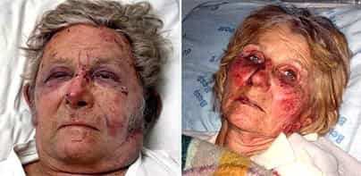
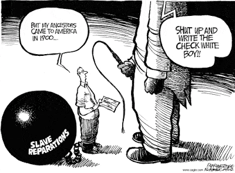

Members of the South African parliament have overwhelmingly voted to take land from white people—without any compensation. Best of all, they have produced virtually no plan as to how this will be achieved, leading to speculation that any expropriation is going to resemble the terrible violence that occurred against white farmers in neighboring Zimbabwe under dictator Robert Mugabe. Even with a plan, the proposed measures would reek of racism, bullying, and intimidation.
Since the resignation of Jacob Zuma in February, President Cyril Ramaphosa has used rather inflammatory rhetoric in support of land expropriation. This is unsurprising when one considers both South Africa’s long-term problems and more recent scandals involving inexcusable economic and social mismanagement. For example, Cape Town, an area home to four or five million people, is about to run completely out of water. Catastrophes or impending catastrophes in South Africa are almost certainly being swept under the carpet via racially charged mischief like calls for land seizures from whites.
It has been nearly 25 years since Nelson Mandela became the first black leader of South Africa and whites are still being scapegoated for the country’s numerous woes. Given the disdain many elites, both black and white, have for everyday white South Africans, you can be sure that many in the latter group feel betrayed by the present political climate. They threw their weight behind Nelson Mandela in the past as they expected reconciliation and peace, not aggression, theft, racism, and the use of force against them.
Is your country not working? Blame and bully white farmers

A white Zimbabwean couple nearly killed during land expropriations under Robert Mugabe. White South African farmers can expect similar treatment–and many have already received it.
Anyone who has been to South Africa like I have can remember a very conflicted, crisis-ridden country “boasting”…
- ridiculous general crime rates, defying both the country’s relatively non-violent history and many of its economic indicators, which are actually above the African average in most cases;
- an astronomical murder rate, typically meaning roughly as many people die every year from homicide as perished from decades of white-controlled apartheid;
- an HIV/AIDS crisis, accelerated by moronic levels of negligence under Nelson Mandela, Thabo Mbeki, and Jacob Zuma;
- shocking levels of corruption, including a major farce where Zuma used public funds to renovate his own home and described his luxurious new swimming pool as anti-fire protection; and
- frequent demands for the genocide of white people, particularly by extremists such as Julius Malema, infamous for singing about the murder of Boers, a predominantly Dutch, German, and French white ethnic group.
Incidentally, Malema and his far-left Economic Freedom Fighters (EFF) were behind the expropriation motion later backed by the ruling African National Congress (ANC). Having lost much public support following a series of controversies, the ANC is increasingly adopting the EFF’s anti-white language to win back votes.
Where are CNN and the other usual suspects?
Calling on Jake Tapper and other “fearless journalists” from CNN.
CNN has been silent on a country’s parliament voting to take land from people based on their race. They did, however, report on “news” that South Africa and Wales plan to play a one-off rugby match in Washington D.C. Sport can be a very important part of our lives, true, yet I doubt most people in Washington—or anywhere else in the US—will take note of a sport virtually no Americans play.
Amidst constantly regurgitated minutiae about “the Russia investigation,” CNN and comparably biased leftist “news” outlets have no time for proven events that are going to severely impact on people’s lives, regardless of whether violence does or does not accompany the taking of land from whites in South Africa (it probably will). This has been standard procedure for a long time and we can bet it shall continue well into the future.
Is South Africa’s path going to be emulated by America?

Far-left activists in the US insist on “reparations” for slavery, an incredibly tone-deaf proposal, not just because the vast majority of African slaves were initially enslaved by fellow blacks. Native American extremists are usually provided with less airtime but have also been known to espouse very revanchist ideas toward various US governments. So is any South African model for anti-white land-grabbing going to inspire angry elements in America?
In 10 or 20 years’ time, maybe even just five, do not be shocked if the kinds of news you read online today concerning attacked white farmers or land expropriation “discussions” in Africa start to repeat themselves in the American south-west or south. And if CNN and other leftist outlets are saying virtually nothing in relation to South Africa now, would you really expect them to sternly oppose such measures when they begin to be pursued in North America? Of course not.
Read More: As A Coloured Man From South Africa, I Exist In The No Man’s Land Of Racial Identity